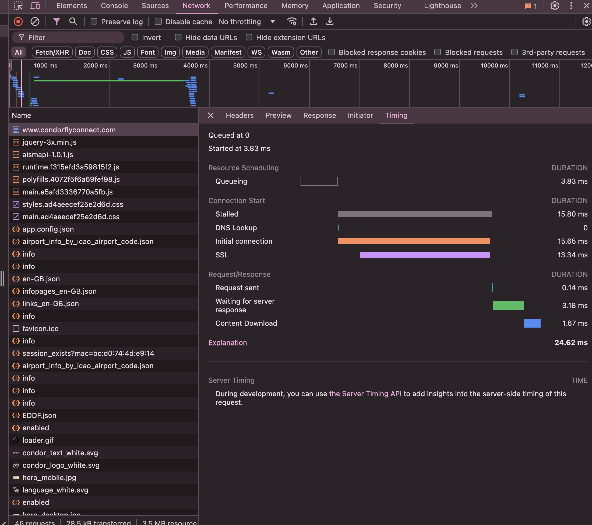
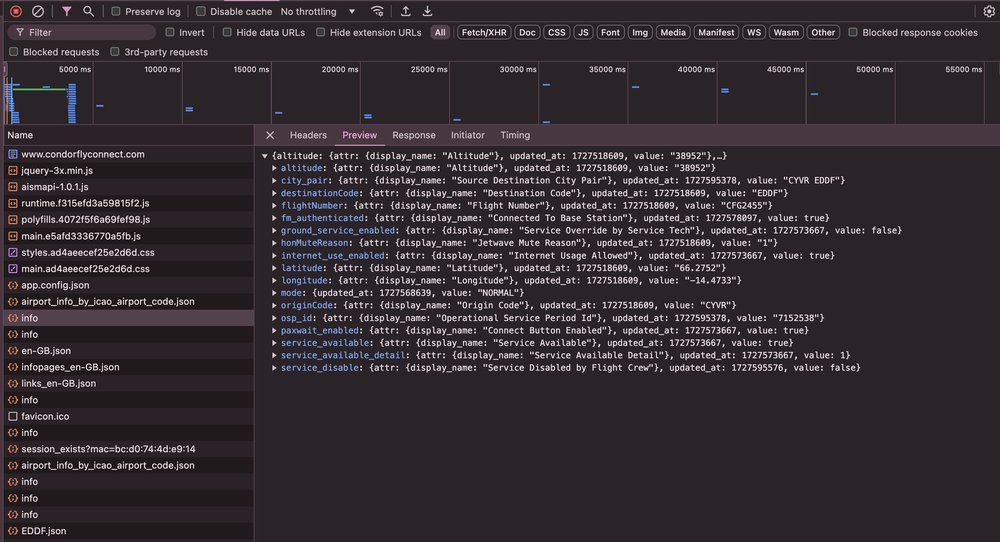
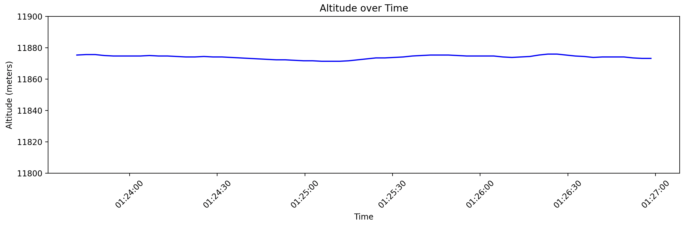
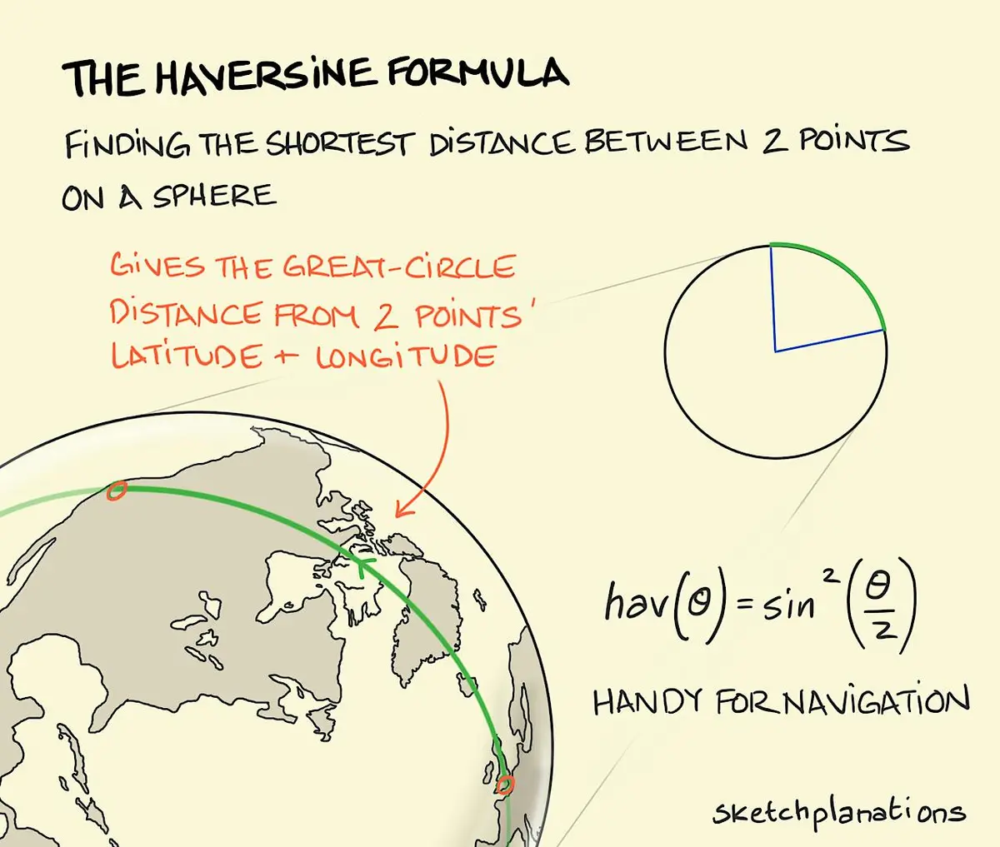
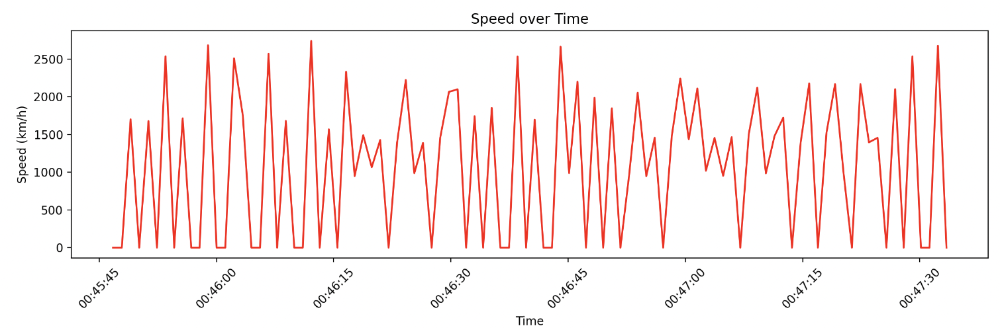
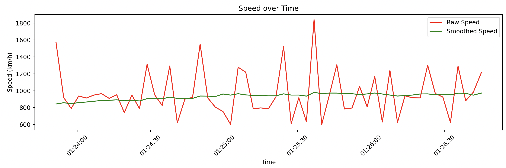
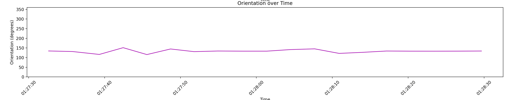

Airplane
I recently took a flight on Condor from Vancouver to Frankfurt. One service being offered was in-flight WiFi, which I had never used before. Excited to try it, I connected to the local network on the plane and navigated to the provided URL to purchase access. Unfortunately, it looked like the site was broken and the page could not be reached:
Getting Internet
I was still connected to the network on the plane though, so I was curious to see if I could get access to the internet another way. I fired up a terminal and ran a traceroute to get the IP of the router on the plane:
Out of curiosity, I pasted the address into my browser to see what would happen. It redirected me to the correct page where I could buy internet!
I must have been the only person on the entire plane who was able to access the internet. Everyone else would have been using the broken URL from the provided QR codes.
Digging Around
Naturally, I started poking around. The website was making lots of network requests:
One thing that was quite interesting was this `info.json` endpoint which seemed to contain lots of data like our current position, altitude, destination, and even whether the internet had been disabled by the flight crew or not:
Graphing Altitude
I wrote a quick Python script to keep hitting this endpoint every second and save the data. I was able to track our altitude over time and graphed it:
Neat! The altitude was surprisingly stable (note that the y-axis markers are only 10 meters)!
Determining Speed from Position
I wanted to graph speed aswell, but the API only provided our current position in a (latitude, longitude) pair. To calculate the speed, I would need to calculate the distance between two points and divide by the time difference.
On a 2D plane (hah), this would be pretty easy. We would just take the Euclidean distance between the two points. Unfortunately, as hard as it is for some people to believe, the Earth is not flat.
The simplest thing we can do instead is to assume the Earth is a sphere and use the Haversine formula to calculate the distance between any two given points. You take your two points and observe the circle (there's only one) that goes through both points and has the same radius and center as the sphere. The length of the minor arc between the two points is the distance between them. Since the radius of the circle is known, the length of the arc can be calculated.
This graphic explains it well:
With the help of a local LLM, I whipped up the following code to calculate it:
from math import radians, sin, cos, sqrt, atan2
EARTH_RADIUS_KM = 6371
# Compute distance between two points on a sphere
def haversine(lat1, lon1, lat2, lon2, radius=EARTH_RADIUS_KM):
# Convert decimal degrees to radians
dlat = radians(lat2 - lat1)
dlon = radians(lon2 - lon1)
lat1_rad = radians(lat1)
lat2_rad = radians(lat2)
# Haversine formula
a = sin(dlat/2)**2 + cos(lat1_rad) * cos(lat2_rad) * sin(dlon/2)**2
c = 2 * atan2(sqrt(a), sqrt(1 - a))
distance = radius * c
return distance
Which yielded a speed graph that looked something like this:
Yikes! Very noisy.
To smooth it out, I increased the polling time from 1s to 3s to allow more of a distance to build up between points. Then I smoothed out the signal using a moving average to get the final speed:
Much better! I was able to see that the plane was cruising at around 900 km/h, which the inflight display confirmed.
Determining Orientation from Positions
To calculate our bearing, I used the following code:
# Function to calculate bearing between two points
def calculate_bearing(lat1, lon1, lat2, lon2):
"""
Calculate the bearing between two points on the Earth specified by latitude and longitude.
"""
lat1_rad = radians(lat1)
lat2_rad = radians(lat2)
diff_long = radians(lon2 - lon1)
x = sin(diff_long) * cos(lat2_rad)
y = cos(lat1_rad) * sin(lat2_rad) - (sin(lat1_rad) * cos(lat2_rad) * cos(diff_long))
initial_bearing = atan2(x, y)
# Convert from radians to degrees and normalize the bearing to 0 - 360 degrees
initial_bearing = (initial_bearing * 180 / math.pi) % 360
return initial_bearing
And got something that looks like this:
Landing
I wanted to graph how the altitude, speed, and orientation changed as we landed. Unfortunately, laptops have to be closed and put away during descent. I couldn't figure out how to get around the the security policy on my corporate laptop which almost immediately puts it to sleep after a bit of inactivity. So unfortunatley for both of us, no cool looking graphs here.
I'll have to remember to bring a personal device next time! Maybe I can a POST request to change our altitude, too ...